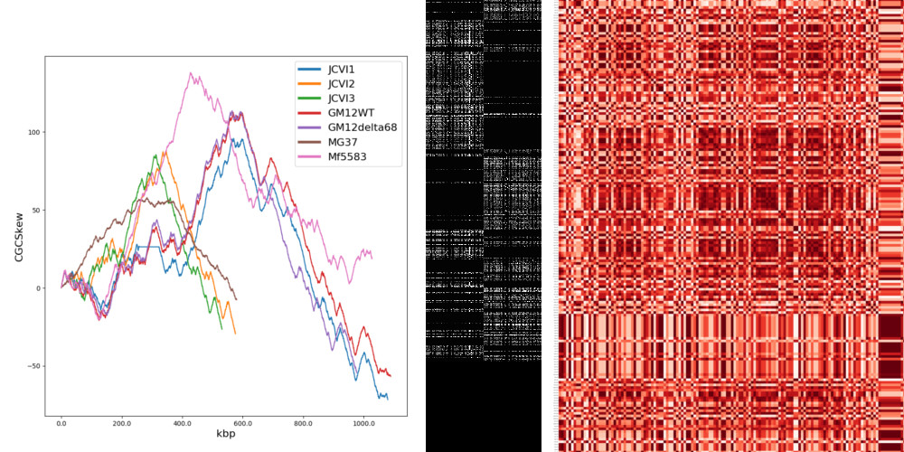
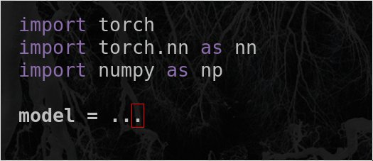

This was a videogame created in 48h in the context of the Global Game Jam 2020, in Geneva, with two friends.
I had the opportunity to learn to use the Godot Engine, and for once, use my creativity with no boundaries ;)
To try it out, head out to the GGJ2020 website and download the "sources files" (bottom of the page). Source code
We successfully built a deep neural network to colorize 128x128 black and white images in a convincing way.
The archicture is that of a UNET Self-Attention GAN, with a fine-tuned VGG19 (convulution layers only) as part of the encoder. Source code
We simulated a population of hosts and parasites in a 2D environment. By inducing mutations, resistance, virulence and transmission, we made the populations co-evolve to verify the laws of epidemiology.
I'm most of proud of having implemented a quad-tree type of algorithm to calculate collisions between the particles, which dramatically increased fluency as well as the maximum number of individuals that can co-exist in a single run. Source code
I used a simple Markov Chain implementation to model the position of the random moving knight, on a chessboard, over time.
I did this while commuting in the train, in R, so it's not the most efficient code ever written.
Also, it turns out the results aren't that impressive : it eventually reaches a simple oscillating pattern (since the knight jumps an odd number of tiles).
But hey, that was fun ! Source code

Machine Learning Exploratory Analysis of Bacterial Genome Encoding Link to Growth Rate
This was the topic of my Master's project. I used classical exploratory Machine Learning techniques to to analyze Mycobacterium sp. strains as well as other, less-related bacteria, to understand why some strains replicate faster than others.
I extracted the Tetranucleotide Distribution, GC Skew and Dicodon/Codon Usage of all sequences and applied PCA/PCoA to analyze the variance of the datasets. I also annotated the sequences and extracted genomic features from the core genes of each dataset to perform an Elastic Net Regression. Finally, I compressed the genomes into standardized black and white images representing the position and Codon Usage of the core genomes, to be used to train a Convolutional Neural Network as we gathered more data.
I used multiple data visualization techniques to help me analyze my methodology and more importantly to find where the signal could be hidden. Source code
Please do reach me if you would like to read the whole paper.
For our Bachelor's project, we analyzed how T. Aestivum (wheat) and L. Perenne (ryegrass) compete when cultivated together.
As part of the team, my work mainly consisted in performing Statistical Analysis and Data Visualization. I processed the data and performed multiple linear regression on dry biomass and plotted the models. Source code

During my internship at Biognosys, I developed a model to predict Ion Mobility (IM) for data acquired by PASEF (Parallel Accumulation Serial Fragmentation). Using more than 1.6M unique precursors and running in under 1/100th of a second, the model was accurate within 0.996 of Pearson's correlation and was integrated into Spectronaut™ in July 2021 to increase identifications, by up to 12%, in DIA (Data-Independent Acquisition) analysis when IM was not available.
As a second project, I built a model that scores association of peak groups chromatograms (XIC) and precursor. It was able to separate targets and decoys with more than 95% accuracy and, when coupled with previous scores, increased identifications by up to 5%.
Some of this work was presented at ASMS 2021 in Philadelphia PA ! Biognosys